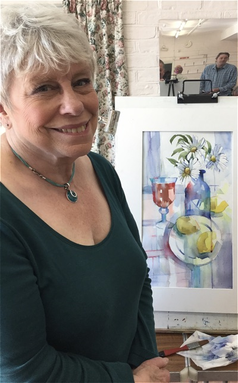

Click here to return to programme page
2017
Zen and the art of painting in the now!
Hurricane Brian did not deter a large attendance for our latest demo and we were well rewarded
thanks to the inspiring and informative local artist, Christine Forbes.
Christine laid out her approach to painting as colourfully as she laid out her palette.
First and foremost, drawing is everything ... draw until you're bored .. then draw some more.
What matters to Christine is line, form and space; and, perhaps linking to her exploration
of Zen Buddhism, she urged us to "paint in the now". By this, she explained, we should
worry less about how the painting might turn out ... or whether it would sell ...
but simply enjoy the actual process of painting, allowing our minds to relax
and our intuition to take control!
Working on the flat and with watercolours, Christine used some of her existing artwork
to demonstrate her "anti-painting" approach. Not for her expensive sable brushes
but synthetic ones with "boing-ability", dead biros, pencils (used on their own
or tipped with paint), twigs and so on. She recommended 160gsm cartridge paper
for warming-up before using more expensive Bockingford watercolour paper.
Drawing on John Berger's "Ways of seeing", Christine encouraged us to think about our senses
as we painted. For her, touch was as important to sight ... how the pencil or brush
felt in her hand translated into whatever appeared on the paper. Through these marks
she made real her personal perception of reality and urged us to ensure our paintings
reflected what we felt as well as saw in the world.
Christine finished a stirring and engaging afternoon by hammering home her mantra
that "drawing is everything" adding that constant repetition would "magnify and nurture"
our future artwork. I am sure we all came away believing that Hurricane Brian had less power
and energy than our visiting artist!
Bath comes to Sussex via Essex!
Our latest demonstrator was Essex-based Paul Alcock and he chose as his subject a street in Bath.
Paul often paints "plein aire" and showed us several examples of his fine work, some completed
over several sessions (making sure the time of day/weather conditions were similar)
and others in less than two hours.
A good crowd turned out, keen to see Paul in action and hear about the water-mixable oils
he was using. Paul felt there was little difference between these and more "traditional" oils
and that the techniques were similar, with the use of specially produced thinners and mediums
to abide by the "fat-over'lean" principle. He ran through his palette and his special use
for a piece of discarded venetian blind - keeping his little piles of paint slightly separate
from the rest of the palette!
Paul used a pastel pencil to mark only the main features of his subject but created
the overall image freely using paint directly - something he does more regularly now
as he believes this helps to create a more lively and vibrant end-product. He starts in one position -
in this case the little arch on the left - and builds out from there. Having created the arch,
he uses this to establish the comparative size, position and so on of the other buildings.
If something is a bit "out" - as happened with his first positioning of the roof-line - Paul showed
how easy it was with these paints to correct issues "on the hoof"!
In less than an hour we could see the painting take shape and in the second half
Paul brought it all to life, changing some of the tones in the mid-ground and adding the two silhouetted
figures to add interest. The large tree was darkened to draw it forwards and help to frame the archway
while Paul used yet another piece of blind to help create some of the guttering of the main building.
Creative indeed!
Just before ending, Paul had time to share some tips on painting outdoors
and carrying oil paintings safely - and show us some of his typical street gear.
All added to a successful afternoon's demonstration.
Superlative portrait painting by Andrew James
On this Queen's birthday, we were royally entertained by Kent-based artist, Andrew James,
creating a vibrant and emotion-packed portrait of model, Jack. He explained
how portraiture starts with forming that human connection with the sitter before determining
the "mechanics" - the positioning of artist and model, and the sources of light which create form
and help determine the depth of shadow. Then the fun began... not with a careful outline
of Jack's face but a few minutes worth of what seemed like frenetic scribbling...

As the random doodle became a human shape, Andrew took up his palette and applied
large blocks of colour, reflecting only light and shade and the warm and cooler sides of the head.

Whereas some artists might prefer their model to remain as still as possible,
Andrew freely engaged Jack in conversation, happy to answer questions on his technique and
approach. Andrew explained how he had chosen the colours on his palette to reflect the tones
he saw in Jack's skin. Today he had chosen Titanium white, lemon yellow (known as bright lake
in Michael Harding), yellow ochre, Cadmium red, magenta, pthalo blue, burnt umber and a light green.
To a question from the audience, Andrew mentioned that he ofter found viridian green useful
in black skins but that he was too vibrant in most Caucasian skin tones.

Andrew stressed that - in his approach - it was critical to establish the whole face and allow
individual elements to emerge rather than become obsessed with detail in, say, the eyes
or the mouth. For this reason, he used a limited number of (hogs hair) brushes, all close in size,
and did not resort to smaller brushes in areas like the eyes. He believes that this ensures
a consistency in how the paint is applied even when the actual brushstrokes are varied.
The last part of the painting was the background, purposely left so Andrew could use it
both to help "carve" the image into the ground and also to ensure he matched the facial tones
with those behind. It was interesting how at this stage Andrew would apply strokes
to the background ... then back to the face ... then the background and so on.
Another way of maintaining all-round harmony.
Time beat us all in the end and Andrew was forced to end the session long before he thought
a polished painting would emerge. While he thought of it as no more than "an instructive sketch",
the audience was delighted to have been present for a true masterclass of portraiture.
Model Jack was also delighted when he was presented with the final canvas.
For more information on Andrew James, RP, do visit his website at andrewjamesartist.co.uk.
Masterclass from Liz Seward
A large crowd welcomed back renowned artist (and our President), Liz Seward.
Following an impassioned plea for members to take an active role in the society to ensure its
prosperity, Liz gave us a clear insight into her current work, describing it as
"watercolour but not as you've known it"!

Her set-up for the day was a typical table layout but, having spent many years on working
in a realistic style, she found herself drawn more by pattern and shape,
seeing things more in two dimensions and as silhouettes.

So, it was not long before her approach on paper became clear. But this was not going to be
just a painting demonstration. Liz took time to share her love of particular papers,
brushes and colours, explaining in detail to the audience the differences - shortfalls and benefits -
of using varying items. Amongst her favourite colours were Hansa light by Daniel Smith
and Indian Yellow and coeruleum blue by Golden - applied with "big square brushes
to avoid fiddling", recommending Da Vinci. The masterclass continued with
an exposition on the different types of watercolour paper available, reinforcing that cotton based
products (such as Arches or Langton Prestige) with their longer strands could take more washes
than cellulose-based products - though, of course, would cost more.
Moving from paints, Liz said that she had become a greater advocate for watercolour pencils
recently given an improved selection on the market. The main issue here, she stressed,
was for artists to be aware of just how light-fast the pencils would be. Caran d/Ache Luminance
were amongst her favourites and were exhibition quality being totally lightfast. Sennelier
could be a good alternative. Adding to this mixed-media demo, Liz used Neo-colour wax crayons
which - to the surprise of some - were water soluble to reinforce highlights and
Windsor and Newton colour markers to emphasise some outlines
(a technique she uses mostly with collage).
The session came to an end far too quickly for we had been entertained not only to a fine painting
but an in-depth masterclass by a first-class artist.
Karin Moorhouse and the sleeping beauty!
Erstwhile Artist-in-Residence at Arundel Castle, Karin Moorhouse was our recent demonstrator,
creating in oils a lovely painting of her grand-daughter, Ruby ... whom Karin has painted regularly
to recall the child's early years. Karin began by establishing a "box" to build the main shape,
stressing that this was not a paint-by-numbers but a dynamic, creative process.
Karin gave us good advice on using triangulation as a means of checking the position of the key
features and encouraging us to keep to "big shapes" rather than be drawn in by any details
at this stage. With a few deft strokes a likeness already began to appear:

Moving on from establishing a basic shape, Karin focused on what would become
the darkest areas - with the mantra of "darks thin, lights fat" - rejecting any use of white
at this stage as this would hinder creating the deepest darks:

Only at this stage, Karin began to introduce colour, adding red to adjust the temperature,
ensuring it reflected the age and skin tone of the subject. The key issue here
is to avoid over-use of primary colours to avoid the whole thing becoming too high-key,
not to say brassy. Karin's usual palette included titanium white, bleached white
(sometimes called buff white), yellow ochre, terra rosa, burnt sienna, cadmium red,
ultramarine blue and raw umber. With colour now on the canvas, a fan brush was used
to soften edges, remove some brush marks and to help refine the planes of the face:

With so much useful discussion created as the demo unfolded, this was as far as Karin
was able to complete on the day but sent us this next version following another studio session.
Still not fully completed - another image is promised soon - but with the colours now settling
and the shift from one tone to the next becoming more subtle, we see the real quality
of Karin's art. Almost as beautiful as Ruby herself!
And here's Karin's final image of the sleeping beauty. Lovely stuff:
2017 continues with another fantastic demo
February brought Leisure Painter contributor Adie Parker to Ferring and what a super demonstration
of her talent she gave. The brief was to paint an interior scene with artificial light...
and it started out like this:

Adie came with a prepared canvas and a palette holding her pre-mixed oil colours.
She stressed the benefits of looking carefully before painting anything, to seek out the variations
in colour and tone throughout a scene and mixing your range of colours and hues
before putting a mark on the canvas. She also talked of the value in creating a vibrant "sketch" -
she used a chalk outline to mark the main outline and then dropped in a pinkish colour
to fix this and provide the initial shape. Some of this would be covered later
but some would "shine through" lending life to the finished painting.
Soon, the painting took shape with careful and thoughtful placement of those pre-mixed tones.

Adie gave full detail of the colour range she used, never locked into a single manufacturer
but choosing those colours that appealed most to her and which she considered most vibrant.
Michael Harding Permanent sap green and Mussini Royal blue light got a special mention!
Taking time to answer all questions from the audience and talking us through every step
of her process made this an entertaining as well as informative afternoon.
Time ran out before the painting was completely finished but that was put right a few days later ...
The final image captures the opulence of the room and the posts on the right hand side sparkle
like jewels. A bit like Adie's talent!
What a fantastic start to 2017!

New Forest artist, Dave White, has set the bar high for all our future 2017 demonstrations
with an excellent session on "Sea and sky" in acrylics ... featuring dogs, clouds
in the shape of countries and a new approach to perspective applauded by the Royal Academy.
Can't be bad for a cloudy January afternoon!
Next to his canvas he provided examples of his excellent finished work,
explaining that much of his "bread and butter" came from dog portraits...
so, alongside his demo we were entertained to stories of the loving owners at Crufts
and to an explanation of the traits of Setters! Soon all attention turned to his approach to acrylics
as he helped us appreciate how this medium can be better controlled,
not least to produce a graduated wash of which any water-colourist would have been proud.
Dave involved his audience throughout and with a warning on painting clouds in repetitive shapes
created an interesting sky using the loose outlines of countries as a starting point.
Perhaps you can identify Africa, Australia and even Northern Ireland in the images shown.
This was before he moved down to the beach with its multitude of colours,
all taking the viewer's eye towards a preselected vanishing point
and creating a real sense of depth in the painting.
No wonder that by the end of the session, Dave had hunkered down to sign his latest best-selling
book for members who wanted to make sure they would have a means of recalling his words
of wisdom in the years ahead. While on his knees, he really should have been knighted
for such a super demonstration, enjoyed by every one!
2016
Kate Osborne helps us paint loose in watercolour...
For our final demo of 2016, a large crowd enjoyed an excellent demonstration by
local Sussex artist, Kate Osborne, showing us how she approached animal painting
in a "fast and loose" style - and using a relatively compact palette.
Allowing her colours to merge and blend naturally, and dropping them onto the paper
with everything from an expensive sable to a £1 lady's make-up brush,
those sheep magically appeared.

As Kate had used an overhead projector so everyone could see
exactly what she was painting, the break was an ideal time to see the actual painting up-close
and to ask all those questions that had not been asked before.


Given it was coming close to Christmas, Kate entertained us with a quick undrawn sketch of a robin -
complete with holly and berries - and, to finish, a crow using Indian ink.
Each was accompanied with full notes on the colours and makes that Kate preferred.
A great session to finish our year and we will be looking forward to welcoming Kate back
for a workshop in future.
Would you know what this was? If not... read on.

Local artist, Steve Carroll, provided an informative and engaging presentation on the evolution of
Cubism, thoroughly enjoyed by all attending. Starting well before Picasso and Braque
and bringing the story even more up-to-date, Steve entertained us...
not least with his explanation of how an elephant might look from above to "western" eyes
as contrasted with the indigenous people of the time. Yes, that's what you're looking at above.


To finish the above session, Steve gave us the opportunity to create our first Cubist masterpieces.
OK, maybe not ... but a hugely enjoyable time was had by all.

Kent artist, Carole Aston, putting the final touches to her pen and wash
of the fishermen's net
houses in Hastings

Carole stunned us all with a 'pure' watercolour of Great Dixter oasts
before moving to pen and wash

Everyone enjoyed a super demonstration from Hashim Akib
Here's a better view of Hash's vibrant portrait ... completed in less than 90 minutes